This notebook runs on Colab as-is. The badge link above and the GITHUB_RAW line in the setup cell already point to this repository, so everything installs and loads automatically.
Chapter 0 — Precourse Refresher¶
Lab: the undergraduate toolkit, in Python¶
Course: Quantitative Research Methods Instructor: Prof. Dr. Christoph Weisser Source: James, Witten, Hastie, Tibshirani & Taylor (2023), An Introduction to Statistical Learning, with Applications in Python, Springer. Companion code at statlearning.com.
Goal. Work through every idea of the Chapter 0 slide deck in code: describing one variable and two, probability and Bayes, the standard distributions, standard errors and confidence intervals, hypothesis tests and power, simple linear regression, matrix algebra and gradient descent — finishing with the deck’s [Python] exercises, fully worked.
How to use it. Run the cells in order. Every figure of the deck is rebuilt here from the same data, so you can change a number and watch the picture move. Nothing below assumes more than an introductory undergraduate course.
Companion slides: Chapters/chapter_00/chapter_00.pdf.
Setup¶
Run this cell once. The ISLP package can be installed with pip install ISLP. As an alternative, the same data sets are available as CSVs in the workspace’s ALL CSV FILES - 2nd Edition folder.
Google Colab: this notebook also runs on Colab out of the box — the setup cell below installs any missing packages and downloads the data automatically.
# --- Setup: runs locally AND on Google Colab --------------------------------
# Silence only the spurious 'encountered in matmul' RuntimeWarnings that the macOS
# Accelerate BLAS emits; real warnings (deprecations, model caveats) stay visible.
import warnings
warnings.filterwarnings('ignore', message='.*encountered in matmul', category=RuntimeWarning)
import importlib.util, os, subprocess, sys
IN_COLAB = 'google.colab' in sys.modules
def _ensure(pkg, import_name=None):
"""pip-install pkg (quietly) if its import is missing."""
if importlib.util.find_spec(import_name or pkg) is None:
subprocess.run([sys.executable, '-m', 'pip', 'install', '-q', pkg], check=False)
if IN_COLAB: # Colab ships numpy/pandas/sklearn/statsmodels; add course extras
for _pkg, _imp in [('ISLP', 'ISLP')]:
_ensure(_pkg, _imp)
import numpy as np
import pandas as pd
import matplotlib.pyplot as plt
rng = np.random.default_rng(2024)
plt.rcParams['figure.dpi'] = 110
try:
from ISLP import load_data
HAVE_ISLP = True
except ImportError:
HAVE_ISLP = False
print('ISLP not installed; using CSV / URL fallbacks.')
# Local CSV location (repo layout first, then legacy paths, then a data/ cache).
_CANDIDATES = ['../ALL CSV FILES - 2nd Edition',
'ALL CSV FILES - 2nd Edition',
'../../ALL CSV FILES - 2nd Edition', 'data']
CSV = next((p for p in _CANDIDATES if os.path.isdir(p)), 'data')
# GITHUB_RAW lets a fresh Colab runtime fetch any
# CSV that is neither in ISLP nor already local (spaces in the folder -> %20).
GITHUB_RAW = ('https://raw.githubusercontent.com/ChrisW09/Quantitative-Research-Methods/main/'
'ALL%20CSV%20FILES%20-%202nd%20Edition')
# The four datasets NOT in the ISLP package -> load from the book's official
# site so the notebook works on a fresh Colab even before the repo is published.
KNOWN_URLS = {
'Advertising': 'https://www.statlearning.com/s/Advertising.csv',
'Heart': 'https://www.statlearning.com/s/Heart.csv',
'Income1': 'https://www.statlearning.com/s/Income1.csv',
'Income2': 'https://www.statlearning.com/s/Income2.csv',
}
def load(name, **read_csv_kwargs):
"""Load a course dataset. Order: ISLP package -> R datasets -> local CSV
-> official book URL -> your GitHub repo. Works locally and on Colab."""
if HAVE_ISLP:
try:
return load_data(name)
except Exception:
pass
if name == 'USArrests': # classic R dataset, not in ISLP
try:
import statsmodels.api as sm
return sm.datasets.get_rdataset('USArrests', 'datasets').data
except Exception:
pass
path = f'{CSV}/{name}.csv'
if os.path.exists(path): # running from the repo (local)
return pd.read_csv(path, **read_csv_kwargs)
remotes = ([KNOWN_URLS[name]] if name in KNOWN_URLS else []) + [f'{GITHUB_RAW}/{name}.csv']
for url in remotes: # fresh Colab: stream over https
try:
return pd.read_csv(url, **read_csv_kwargs)
except Exception:
continue
raise FileNotFoundError(
f"Could not load {name!r}. Put the CSV in '{CSV}/' or check your connection for the GITHUB_RAW fallback.")
# Chapter 0 also uses scipy.stats (distributions and tests) and statsmodels.
from scipy import stats
import statsmodels.formula.api as smf
ACCENT, ORANGE, GREY = '#26468C', '#C8641E', '#7A7A7A' # the deck's colours
print('ready')
ready
1. Data, variables and notation¶
A data set is \(n\) rows (observations) by \(p\) columns (variables). The type of the response names the problem: quantitative \(\Rightarrow\) regression, qualitative \(\Rightarrow\) classification.
Wage = load('Wage')
print('n =', Wage.shape[0], ' p =', Wage.shape[1])
Wage.head()
n = 3000 p = 11
| year | age | maritl | race | education | region | jobclass | health | health_ins | logwage | wage | |
|---|---|---|---|---|---|---|---|---|---|---|---|
| 0 | 2006 | 18 | 1. Never Married | 1. White | 1. < HS Grad | 2. Middle Atlantic | 1. Industrial | 1. <=Good | 2. No | 4.318063 | 75.043154 |
| 1 | 2004 | 24 | 1. Never Married | 1. White | 4. College Grad | 2. Middle Atlantic | 2. Information | 2. >=Very Good | 2. No | 4.255273 | 70.476020 |
| 2 | 2003 | 45 | 2. Married | 1. White | 3. Some College | 2. Middle Atlantic | 1. Industrial | 1. <=Good | 1. Yes | 4.875061 | 130.982177 |
| 3 | 2003 | 43 | 2. Married | 3. Asian | 4. College Grad | 2. Middle Atlantic | 2. Information | 2. >=Very Good | 1. Yes | 5.041393 | 154.685293 |
| 4 | 2005 | 50 | 4. Divorced | 1. White | 2. HS Grad | 2. Middle Atlantic | 2. Information | 1. <=Good | 1. Yes | 4.318063 | 75.043154 |
# What IS each column? dtype is a first hint, but always look at the values.
Wage.dtypes
year int64
age int64
maritl category
race category
education category
region category
jobclass category
health category
health_ins category
logwage float64
wage float64
dtype: object
# Quantitative -> mean/SD/quantiles; qualitative -> counts and proportions.
display(Wage[['age', 'wage']].describe().T)
display(Wage['education'].value_counts())
display(Wage['education'].value_counts(normalize=True).round(3))
| count | mean | std | min | 25% | 50% | 75% | max | |
|---|---|---|---|---|---|---|---|---|
| age | 3000.0 | 42.414667 | 11.542406 | 18.000000 | 33.75000 | 42.000000 | 51.000000 | 80.00000 |
| wage | 3000.0 | 111.703608 | 41.728595 | 20.085537 | 85.38394 | 104.921507 | 128.680488 | 318.34243 |
education
2. HS Grad 971
4. College Grad 685
3. Some College 650
5. Advanced Degree 426
1. < HS Grad 268
Name: count, dtype: int64
education
2. HS Grad 0.324
4. College Grad 0.228
3. Some College 0.217
5. Advanced Degree 0.142
1. < HS Grad 0.089
Name: proportion, dtype: float64
Watch out.
Wagecarries bothwageandlogwage. The second is a transform of the response itself: using it as a predictor would leak the answer into the model. Always check what the columns actually are.
2. Describing one variable: centre, spread, shape¶
Three questions, always in this order: where do typical values sit, how much do they differ, and what shape is the distribution?
x = np.array([2, 4, 4, 5, 7, 8, 12]) # the deck's worked example
print('mean ', x.mean()) # 6.0
print('median ', np.median(x)) # 5.0
print('mode ', stats.mode(x, keepdims=False).mode) # 4
print('var (n-1)', x.var(ddof=1)) # 11.0 <- the SAMPLE variance
print('sd (n-1)', x.std(ddof=1).round(3)) # 3.317
print('var (n) ', x.var().round(3), ' <- numpy default: NOT what you want')
mean 6.0
median 5.0
mode 4
var (n-1) 11.0
sd (n-1) 3.317
var (n) 9.429 <- numpy default: NOT what you want
The ddof trap. numpy divides by \(n\) by default; pandas divides by \(n-1\). The sample variance divides by \(n-1\) because one degree of freedom was spent estimating \(\bar x\). Always pass ddof=1 in numpy — or use pandas and know why it differs.
q1, med, q3 = np.percentile(x, [25, 50, 75])
iqr = q3 - q1
print(f'Q1={q1} median={med} Q3={q3} IQR={iqr}')
print(f'fences: [{q1 - 1.5*iqr}, {q3 + 1.5*iqr}] -> outliers:', x[(x < q1-1.5*iqr) | (x > q3+1.5*iqr)])
Q1=4.0 median=5.0 Q3=7.5 IQR=3.5
fences: [-1.25, 12.75] -> outliers: []
# The same summary on real data, and the five-number summary as a boxplot.
w = Wage['wage']
print(w.describe().round(2).to_string())
fig, (ax1, ax2) = plt.subplots(2, 1, figsize=(7, 4), sharex=True,
gridspec_kw={'height_ratios': [3, 1]})
ax1.hist(w, bins=40, color=ACCENT, alpha=.75, edgecolor='white', lw=.4)
ax1.axvline(w.mean(), color=ORANGE, lw=2, label=f'mean = {w.mean():.1f}')
ax1.axvline(w.median(), color='black', lw=2, ls='--', label=f'median = {w.median():.1f}')
ax1.legend(frameon=False); ax1.set_ylabel('frequency')
ax2.boxplot(w, vert=False, widths=.5)
ax2.set_yticks([]); ax2.set_xlabel('wage (thousands of dollars)')
plt.tight_layout(); plt.show()
count 3000.00
mean 111.70
std 41.73
min 20.09
25% 85.38
50% 104.92
75% 128.68
max 318.34
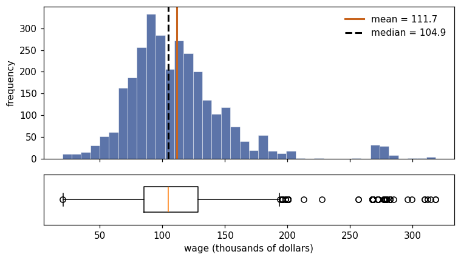
Mean \(>\) median, and a long upper tail: right-skewed. For skewed variables report the median and IQR alongside the mean.
# Four shapes, all from the course data (the deck's gallery).
Boston, Credit = load('Boston'), load('Credit')
panels = [(Boston['rm'], 'Boston: rooms', 'roughly symmetric'),
(Wage['wage'], 'Wage: wages', 'right-skewed'),
(Credit['Balance'], 'Credit: balance', 'spike at zero'),
(Boston['tax'], 'Boston: tax rate', 'bimodal')]
fig, axes = plt.subplots(1, 4, figsize=(13, 2.8))
for ax, (v, title, shape) in zip(axes, panels):
ax.hist(v, bins=30, color=ACCENT, alpha=.75, edgecolor='white', lw=.3)
ax.axvline(v.mean(), color=ORANGE, lw=1.8)
ax.axvline(v.median(), color='black', lw=1.8, ls='--')
ax.set_title(f'{title}\n{shape}', fontsize=9); ax.set_yticks([])
plt.tight_layout(); plt.show()
print('share of Credit customers with a zero balance:', (Credit['Balance'] == 0).mean().round(3))
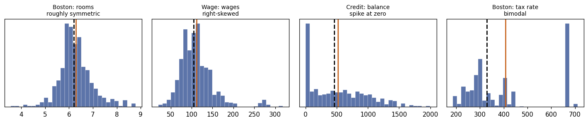
share of Credit customers with a zero balance: 0.225
# Standardising, and what a log transform does to skew.
z = (w - w.mean()) / w.std(ddof=1)
# Standardising sets the mean to 0 and the SD to 1 by construction. In floating
# point the mean is dust of order 1e-16, and its exact digits differ from machine
# to machine -- so assert the property rather than printing the noise.
assert abs(z.mean()) < 1e-12, z.mean()
print(f'z-scores: mean 0 (to floating-point precision), sd {z.std(ddof=1):.3f}')
print(f'skewness: wage {stats.skew(w):+.2f} log(wage) {stats.skew(np.log(w)):+.2f}')
fig, axes = plt.subplots(1, 2, figsize=(9, 3))
for ax, v, name in [(axes[0], w, 'wage'), (axes[1], np.log(w), 'log(wage)')]:
ax.hist(v, bins=40, color=ACCENT, alpha=.75, edgecolor='white', lw=.3)
ax.axvline(np.mean(v), color=ORANGE, lw=1.8)
ax.axvline(np.median(v), color='black', lw=1.8, ls='--')
ax.set_title(f'{name} (skewness {stats.skew(v):+.2f})', fontsize=10)
plt.tight_layout(); plt.show()
z-scores: mean 0 (to floating-point precision), sd 1.000
skewness: wage +1.68 log(wage) -0.12
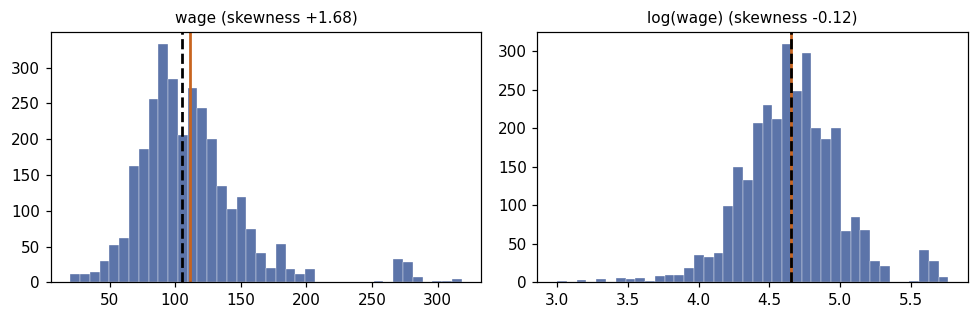
3. Describing two variables: covariance, correlation, and their traps¶
Covariance says whether two variables move together; dividing by both SDs makes it unit-free and gives \(r \in [-1, 1]\).
adv = load('Advertising', index_col=0)
print(adv.head(3).to_string())
cov = np.cov(adv['TV'], adv['sales'], ddof=1)[0, 1]
r = np.corrcoef(adv['TV'], adv['sales'])[0, 1]
print(f'\ncov(TV, sales) = {cov:.2f} (units: $000 x thousands of units)')
print(f'r(TV, sales) = {r:.3f} (unit-free)')
print(f'\nsame r after changing units to single dollars: '
f'{np.corrcoef(adv["TV"]*1000, adv["sales"]).round(3)[0,1]}')
adv.corr().round(3)
TV radio newspaper sales
1 230.1 37.8 69.2 22.1
2 44.5 39.3 45.1 10.4
3 17.2 45.9 69.3 9.3
cov(TV, sales) = 350.39 (units: $000 x thousands of units)
r(TV, sales) = 0.782 (unit-free)
same r after changing units to single dollars: 0.782
| TV | radio | newspaper | sales | |
|---|---|---|---|---|
| TV | 1.000 | 0.055 | 0.057 | 0.782 |
| radio | 0.055 | 1.000 | 0.354 | 0.576 |
| newspaper | 0.057 | 0.354 | 1.000 | 0.228 |
| sales | 0.782 | 0.576 | 0.228 | 1.000 |
# What r sees -- and what it misses.
fig, axes = plt.subplots(1, 4, figsize=(13, 2.9))
for ax, col in zip(axes, ['TV', 'radio', 'newspaper']):
ax.scatter(adv[col], adv['sales'], s=8, color=ACCENT, alpha=.6)
b, a = np.polyfit(adv[col], adv['sales'], 1)
xs = np.linspace(adv[col].min(), adv[col].max(), 50)
ax.plot(xs, a + b*xs, color=ORANGE, lw=1.6)
ax.set_title(f'{col} vs sales\nr = {adv[col].corr(adv["sales"]):.2f}', fontsize=9)
xq = rng.uniform(-3, 3, 200); yq = xq**2 + rng.normal(0, .8, 200)
axes[3].scatter(xq, yq, s=8, color=GREY, alpha=.7)
axes[3].axhline(yq.mean(), color=ORANGE, lw=1.6)
axes[3].set_title(f'y = x$^2$ + noise\nr = {np.corrcoef(xq, yq)[0,1]:.2f}', fontsize=9)
plt.tight_layout(); plt.show()
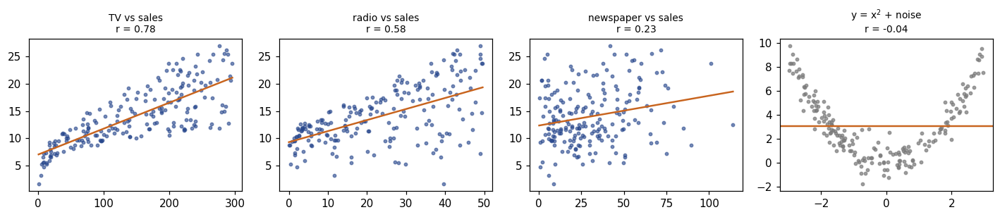
Anscombe’s quartet¶
Four data sets with the same means, SDs, correlation and fitted line — and four different stories.
x1 = np.array([10, 8, 13, 9, 11, 14, 6, 4, 12, 7, 5], float)
x4 = np.array([8, 8, 8, 8, 8, 8, 8, 19, 8, 8, 8], float)
quartet = [
(x1, [8.04, 6.95, 7.58, 8.81, 8.33, 9.96, 7.24, 4.26, 10.84, 4.82, 5.68]),
(x1, [9.14, 8.14, 8.74, 8.77, 9.26, 8.10, 6.13, 3.10, 9.13, 7.26, 4.74]),
(x1, [7.46, 6.77, 12.74, 7.11, 7.81, 8.84, 6.08, 5.39, 8.15, 6.42, 5.73]),
(x4, [6.58, 5.76, 7.71, 8.84, 8.47, 7.04, 5.25, 12.50, 5.56, 7.91, 6.89])]
fig, axes = plt.subplots(1, 4, figsize=(13, 2.8), sharex=True, sharey=True)
for k, (ax, (xa, ya)) in enumerate(zip(axes, quartet), start=1):
ya = np.asarray(ya)
b1, b0 = np.polyfit(xa, ya, 1)
ax.scatter(xa, ya, s=18, color=ACCENT)
xs = np.linspace(3, 20, 20); ax.plot(xs, b0 + b1*xs, color=ORANGE, lw=1.5)
ax.set_title(f'set {k}: mean(y)={ya.mean():.2f}\nr={np.corrcoef(xa, ya)[0,1]:.2f}, '
f'slope={b1:.2f}', fontsize=9)
plt.tight_layout(); plt.show()
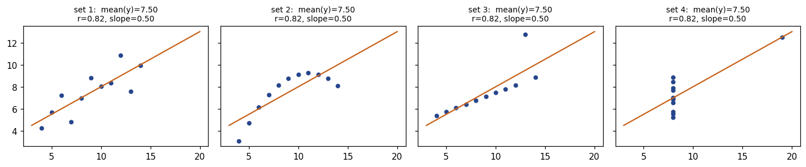
Simpson’s paradox¶
An association can reverse once you condition on a group — which is exactly what adding a variable to a regression does.
rng_s = np.random.default_rng(7)
groups, frames = ['30s', '50s', '70s'], []
for g, bx, by in zip(groups, (2.0, 4.5, 7.0), (4.0, 6.0, 8.0)):
xs = bx + rng_s.normal(0, .6, 40)
ys = by - .5*(xs - bx) + rng_s.normal(0, .35, 40)
frames.append(pd.DataFrame({'exercise': xs, 'cholesterol': ys, 'age_group': g}))
sim = pd.concat(frames, ignore_index=True)
overall = np.polyfit(sim.exercise, sim.cholesterol, 1)[0]
within = sim.groupby('age_group').apply(
lambda d: np.polyfit(d.exercise, d.cholesterol, 1)[0], include_groups=False)
print(f'slope ignoring age group : {overall:+.2f}')
print('slope within each group :', within.round(2).to_dict())
slope ignoring age group : +0.66
slope within each group : {'30s': -0.58, '50s': -0.47, '70s': -0.57}
fig, (ax1, ax2) = plt.subplots(1, 2, figsize=(10, 3.4), sharey=True)
ax1.scatter(sim.exercise, sim.cholesterol, s=12, color=GREY, alpha=.75)
xs = np.linspace(sim.exercise.min(), sim.exercise.max(), 20)
b1, b0 = np.polyfit(sim.exercise, sim.cholesterol, 1)
ax1.plot(xs, b0 + b1*xs, color='black', lw=2)
ax1.set_title(f'Ignoring age: slope {b1:+.2f}')
for (g, d), c in zip(sim.groupby('age_group'), [ACCENT, ORANGE, '#2E7D5B']):
ax2.scatter(d.exercise, d.cholesterol, s=12, color=c, alpha=.8, label=g)
b1g, b0g = np.polyfit(d.exercise, d.cholesterol, 1)
xg = np.linspace(d.exercise.min(), d.exercise.max(), 20)
ax2.plot(xg, b0g + b1g*xg, color=c, lw=1.8)
ax2.legend(title='age group', frameon=False); ax2.set_title('Within each group: slope < 0')
for ax in (ax1, ax2): ax.set_xlabel('hours of exercise per week')
ax1.set_ylabel('cholesterol'); plt.tight_layout(); plt.show()
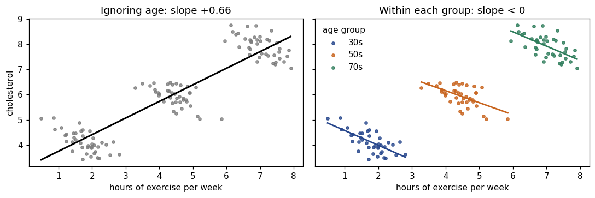
Two categorical variables: the contingency table¶
tab = pd.DataFrame({'bought': [45, 25], 'did_not': [55, 75]},
index=['promotion', 'no promotion'])
display(tab)
print('\nrow proportions (what you compare):')
display(tab.div(tab.sum(axis=1), axis=0).round(3))
chi2, pval, dof, expected = stats.chi2_contingency(tab)
print(f'expected counts under independence:\n{np.round(expected, 1)}')
print(f'\nchi2 = {chi2:.2f}, df = {dof}, p = {pval:.4f}')
| bought | did_not | |
|---|---|---|
| promotion | 45 | 55 |
| no promotion | 25 | 75 |
row proportions (what you compare):
expected counts under independence:
[[35. 65.]
[35. 65.]]
chi2 = 7.93, df = 1, p = 0.0049
| bought | did_not | |
|---|---|---|
| promotion | 0.45 | 0.55 |
| no promotion | 0.25 | 0.75 |
4. Probability, Bayes and the rules of expectation¶
The single most useful probability fact in this course: a test’s accuracy tells you \(P(+\mid\text{ill})\), but you want \(P(\text{ill}\mid+)\) — and converting between them depends on the base rate.
def posterior(prevalence, sensitivity, specificity):
tp = sensitivity * prevalence
fp = (1 - specificity) * (1 - prevalence)
return tp / (tp + fp)
print(f'P(ill | +) = {posterior(0.01, 0.90, 0.95):.3f}') # the deck's example
# The same thing as natural frequencies, per 1000 people:
n = 1000
ill, healthy = 0.01*n, 0.99*n
tp, fp = round(0.90*ill), round(0.05*healthy) # 9 and 50, the slide's tree
print(f'\nof {n} people: {ill:.0f} ill -> {tp} test positive')
print(f' {healthy:.0f} healthy -> {fp} test positive')
print(f'{tp+fp} positives in total, {tp} of them ill -> {tp/(tp+fp):.1%}')
P(ill | +) = 0.154
of 1000 people: 10 ill -> 9 test positive
990 healthy -> 50 test positive
59 positives in total, 9 of them ill -> 15.3%
# How the answer depends on the base rate -- the whole story in one plot.
prev = np.linspace(0.001, 0.5, 300)
fig, ax = plt.subplots(figsize=(6.5, 3))
for spec, ls in [(0.95, '-'), (0.99, '--'), (0.999, ':')]:
ax.plot(prev*100, [posterior(p, 0.90, spec) for p in prev], ls=ls, lw=1.8,
label=f'specificity {spec:.1%}')
ax.set_xlabel('prevalence (%)'); ax.set_ylabel('P(ill | positive test)')
ax.set_title('A positive test means little when the condition is rare')
ax.legend(frameon=False); plt.tight_layout(); plt.show()
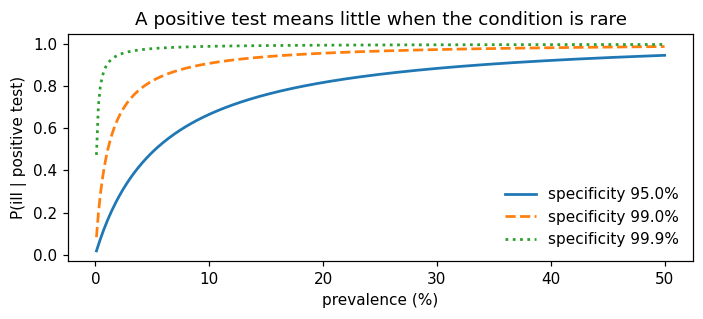
# Expectation and variance rules, checked by simulation (Exercise 0.5).
draws = rng.normal(500, 4, 200_000) # E[X]=500, Var(X)=16
print(f'Var(X) {draws.var(ddof=1):8.3f} (theory 16)')
print(f'Var(X + 3) {(draws + 3).var(ddof=1):8.3f} (theory 16 -- shifting does not change spread)')
print(f'Var(X/1000) {(draws/1000).var(ddof=1):.3e} (theory 1.6e-05 -- scaling squares)')
crates = rng.normal(500, 4, (100_000, 4)) # 4 independent bottles
print(f'\nVar(total of 4) {crates.sum(axis=1).var(ddof=1):7.2f} (theory 64)')
print(f'SD(mean of 4) {crates.mean(axis=1).std(ddof=1):7.3f} (theory 4/sqrt(4) = 2)')
Var(X) 15.997 (theory 16)
Var(X + 3) 15.997 (theory 16 -- shifting does not change spread)
Var(X/1000) 1.600e-05 (theory 1.6e-05 -- scaling squares)
Var(total of 4) 64.55 (theory 64)
SD(mean of 4) 2.009 (theory 4/sqrt(4) = 2)
5. The distributions you will meet¶
fig, axes = plt.subplots(1, 3, figsize=(13, 2.9))
k = np.arange(0, 11)
axes[0].bar(k, stats.binom.pmf(k, 10, 0.3), color=ACCENT, alpha=.8)
axes[0].set_title('Binomial(10, 0.3)\nE=3.0, Var=2.1', fontsize=9.5)
axes[1].bar(k, stats.poisson.pmf(k, 3), color=ACCENT, alpha=.8)
axes[1].set_title('Poisson(3)\nE = Var = 3', fontsize=9.5)
z = np.linspace(-4, 4, 400)
axes[2].plot(z, stats.norm.pdf(z), color=ACCENT, lw=1.8, label='N(0,1)')
axes[2].plot(z, stats.t.pdf(z, 3), color=ORANGE, lw=1.6, ls='--', label='t(3)')
axes[2].plot(z, stats.t.pdf(z, 30), color=GREY, lw=1.4, ls=':', label='t(30)')
axes[2].legend(frameon=False, fontsize=8); axes[2].set_title('normal vs t', fontsize=9.5)
plt.tight_layout(); plt.show()
print('P(|Z| < 1) =', round(stats.norm.cdf(1) - stats.norm.cdf(-1), 4))
print('P(|Z| < 1.96)=', round(stats.norm.cdf(1.96) - stats.norm.cdf(-1.96), 4))
print('P(|Z| < 3) =', round(stats.norm.cdf(3) - stats.norm.cdf(-3), 4))
print('t quantiles (0.975):', [round(float(stats.t.ppf(.975, df)), 3) for df in (5, 30, 100, 10000)])
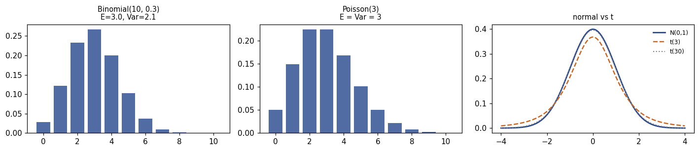
P(|Z| < 1) = 0.6827
P(|Z| < 1.96)= 0.95
P(|Z| < 3) = 0.9973
t quantiles (0.975): [2.571, 2.042, 1.984, 1.96]
The 68–95–99.7 rule, and \(t_\nu \to N(0,1)\) as the degrees of freedom grow: with \(\nu > 30\) the difference is negligible, which is why \(1.96\) is worth memorising.
# The central limit theorem, using the (very skewed) wage distribution.
pop = Wage['wage'].to_numpy()
fig, axes = plt.subplots(1, 4, figsize=(13, 2.7))
axes[0].hist(pop, bins=40, color=GREY, alpha=.75)
axes[0].set_title(f'population\nmean {pop.mean():.0f}', fontsize=9.5)
for ax, n in zip(axes[1:], (2, 10, 50)):
means = rng.choice(pop, size=(4000, n)).mean(axis=1)
ax.hist(means, bins=40, color=ACCENT, alpha=.8)
ax.set_title(f'means of samples, n={n}\nSD {means.std(ddof=1):.1f} '
f'(theory {pop.std(ddof=1)/np.sqrt(n):.1f})', fontsize=9.5)
ax.set_xlim(20, 220)
plt.tight_layout(); plt.show()
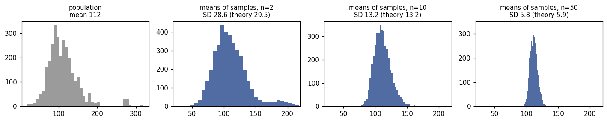
6. Standard errors and confidence intervals¶
The standard deviation describes the data; the standard error describes an estimate, and only the latter shrinks with \(n\).
for n in (100, 400, 1600):
s = pop.std(ddof=1)
print(f'n = {n:5d}: SD of the data = {s:6.2f} SE of the mean = {s/np.sqrt(n):5.2f}')
n = 100: SD of the data = 41.73 SE of the mean = 4.17
n = 400: SD of the data = 41.73 SE of the mean = 2.09
n = 1600: SD of the data = 41.73 SE of the mean = 1.04
# What "95% confident" actually means: repeat the whole procedure many times.
def one_interval(n, rng_):
s = rng_.choice(pop, size=n)
half = stats.t.ppf(.975, n-1) * s.std(ddof=1) / np.sqrt(n)
return s.mean() - half, s.mean() + half
mu = pop.mean()
rng_ci = np.random.default_rng(3)
intervals = [one_interval(40, rng_ci) for _ in range(25)]
misses = sum(not (lo <= mu <= hi) for lo, hi in intervals)
fig, ax = plt.subplots(figsize=(7, 3.4))
for i, (lo, hi) in enumerate(intervals):
covers = lo <= mu <= hi
ax.plot([lo, hi], [i, i], color=ACCENT if covers else ORANGE, lw=1.8)
ax.axvline(mu, color='black', ls='--', lw=1.6)
ax.set_yticks([]); ax.set_xlabel('wage')
ax.set_title(f'25 samples of n=40, one 95% CI each — {misses} miss $\\mu$')
plt.tight_layout(); plt.show()
# ... and the long-run coverage, over 5000 repetitions:
cover = np.mean([lo <= mu <= hi for lo, hi in (one_interval(40, rng_ci) for _ in range(5000))])
print(f'coverage over 5000 repetitions: {cover:.3f}')
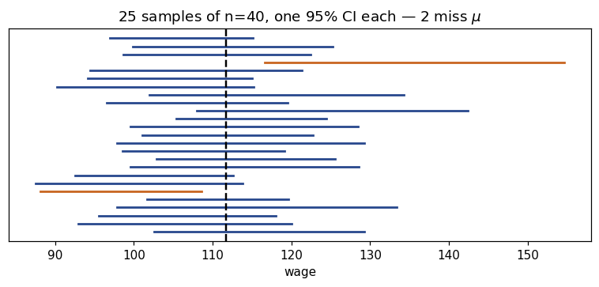
coverage over 5000 repetitions: 0.930
7. Hypothesis tests, \(p\)-values and power¶
# The deck's one-sample t-test, by hand and with scipy.
xbar, s, n, mu0 = 103, 15, 100, 100
se = s / np.sqrt(n)
t_stat = (xbar - mu0) / se
p_val = 2 * stats.t.sf(abs(t_stat), n - 1)
half = stats.t.ppf(.975, n - 1) * se
print(f'SE = {se:.2f} t = {t_stat:.2f} p = {p_val:.4f}')
# (the slide rounds the t quantile to 1.98 and gets [100.03, 105.97])
print(f'95% CI = [{xbar - half:.2f}, {xbar + half:.2f}] -> excludes 100, so the test rejects')
SE = 1.50 t = 2.00 p = 0.0482
95% CI = [100.02, 105.98] -> excludes 100, so the test rejects
# A p-value is an area under the null distribution.
tt = np.linspace(-4, 4, 600); dens = stats.t.pdf(tt, 99)
fig, ax = plt.subplots(figsize=(7, 3))
ax.plot(tt, dens, color=ACCENT, lw=1.8)
for side in (1, -1):
m = tt*side >= t_stat
ax.fill_between(tt[m], dens[m], color=ORANGE, alpha=.75)
ax.axvline(t_stat, color=ORANGE, ls='--'); ax.axvline(-t_stat, color=ORANGE, ls='--')
ax.set_yticks([]); ax.set_title(f'shaded area = p = {p_val:.3f}')
plt.tight_layout(); plt.show()
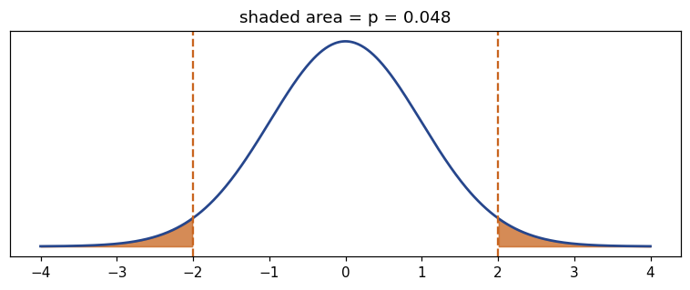
# Power: the probability of detecting an effect that is really there.
def power(n, effect, sd=15, alpha=.05):
se_ = sd / np.sqrt(n)
crit = stats.norm.ppf(1 - alpha/2) * se_
return stats.norm.sf(crit, loc=effect, scale=se_) + stats.norm.cdf(-crit, loc=effect, scale=se_)
ns = np.arange(10, 401, 5)
fig, ax = plt.subplots(figsize=(6.5, 3))
for eff, ls in [(2, ':'), (3, '--'), (5, '-')]:
ax.plot(ns, [power(n_, eff) for n_ in ns], ls=ls, lw=1.8, label=f'true effect = {eff}')
ax.axhline(.8, color=GREY, lw=1)
ax.set_xlabel('sample size n'); ax.set_ylabel('power'); ax.legend(frameon=False)
ax.set_title('Power rises with n and with the size of the effect')
plt.tight_layout(); plt.show()
print('n needed for 80% power at effect = 3:', next(n_ for n_ in ns if power(n_, 3) >= .8))
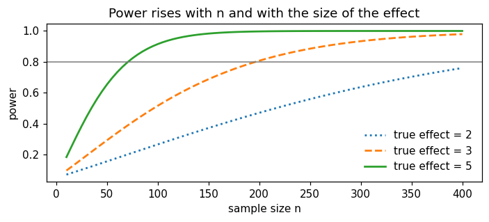
n needed for 80% power at effect = 3: 200
Multiple testing, in two lines. Test 40 true nulls at the 5% level and you expect 2 false positives — this is the entire motivation for Chapter 13.
sig = [(rng.normal(0, 1, 30).mean() / (1/np.sqrt(30))) for _ in range(40)]
pvals = [2*stats.norm.sf(abs(t_)) for t_ in sig]
print('significant at 5% among 40 true nulls:', sum(p < .05 for p in pvals))
print('P(at least one) = 1 - 0.95**40 =', round(1 - .95**40, 3))
significant at 5% among 40 true nulls: 2
P(at least one) = 1 - 0.95**40 = 0.871
8. Simple linear regression — the bridge into Chapter 3¶
# By hand, exactly as on the slides (Extended Exercise 0.2).
X4 = np.array([2., 4., 6., 8.]); Y4 = np.array([5., 8., 12., 15.])
Sxx = ((X4 - X4.mean())**2).sum()
Sxy = ((X4 - X4.mean())*(Y4 - Y4.mean())).sum()
b1 = Sxy / Sxx; b0 = Y4.mean() - b1*X4.mean()
fitted = b0 + b1*X4; resid = Y4 - fitted
rss = (resid**2).sum(); tss = ((Y4 - Y4.mean())**2).sum()
print(f'b1 = {b1:.2f}, b0 = {b0:.2f} -> y_hat = {b0:.1f} + {b1:.1f} x')
print(f'residuals {np.round(resid, 3)} (they sum to {resid.sum():.1e})')
print(f'RSS = {rss:.2f}, TSS = {tss:.0f}, R2 = {1 - rss/tss:.5f} '
f'(= r^2 = {np.corrcoef(X4, Y4)[0,1]**2:.5f})')
b1 = 1.70, b0 = 1.50 -> y_hat = 1.5 + 1.7 x
residuals [ 0.1 -0.3 0.3 -0.1] (they sum to 0.0e+00)
RSS = 0.20, TSS = 58, R2 = 0.99655 (= r^2 = 0.99655)
# The same model on real data, with statsmodels -- the table of Chapter 3.
fit = smf.ols('sales ~ TV', data=adv).fit()
print(fit.summary().tables[1])
print(f'R-squared = {fit.rsquared:.3f}')
print('\nt = coef / std err =', round(fit.params['TV'] / fit.bse['TV'], 2))
print('95% CI:', fit.conf_int().loc['TV'].round(4).tolist())
==============================================================================
coef std err t P>|t| [0.025 0.975]
------------------------------------------------------------------------------
Intercept 7.0326 0.458 15.360 0.000 6.130 7.935
TV 0.0475 0.003 17.668 0.000 0.042 0.053
==============================================================================
R-squared = 0.612
t = coef / std err = 17.67
95% CI: [0.0422, 0.0528]
fig, (ax1, ax2) = plt.subplots(1, 2, figsize=(10, 3.2))
ax1.scatter(adv.TV, adv.sales, s=10, color=ACCENT, alpha=.65)
xs = np.linspace(adv.TV.min(), adv.TV.max(), 50)
ax1.plot(xs, fit.params['Intercept'] + fit.params['TV']*xs, color=ORANGE, lw=2)
ax1.set_xlabel('TV budget'); ax1.set_ylabel('sales')
ax1.set_title(f'y = {fit.params["Intercept"]:.2f} + {fit.params["TV"]:.4f} x')
ax2.scatter(fit.fittedvalues, fit.resid, s=10, color=ACCENT, alpha=.65)
ax2.axhline(0, color=ORANGE, lw=1.6)
ax2.set_xlabel('fitted'); ax2.set_ylabel('residual')
ax2.set_title('residuals vs fitted: a pattern means trouble')
plt.tight_layout(); plt.show()
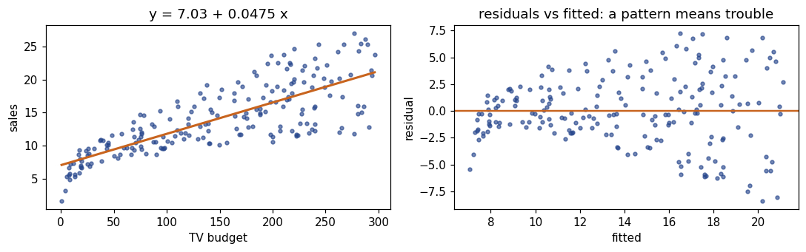
One point can move the whole line¶
An outlier has a large residual; a high-leverage point has an unusual \(x\). The second is far more dangerous.
rng_o = np.random.default_rng(3)
xo = np.linspace(1, 10, 20); yo = 2 + .8*xo + rng_o.normal(0, .7, 20)
fig, axes = plt.subplots(1, 2, figsize=(10, 3.2))
for ax, (px, py, title) in zip(axes, [(5.5, 14.0, 'outlier in y, typical x'),
(22.0, 5.0, 'high-leverage point')]):
xa, ya = np.append(xo, px), np.append(yo, py)
s_before = np.polyfit(xo, yo, 1)[0]; s_after = np.polyfit(xa, ya, 1)[0]
grid = np.linspace(0, max(11, px+1), 50)
ax.scatter(xo, yo, s=16, color=ACCENT, alpha=.8)
ax.scatter([px], [py], s=60, facecolors='none', edgecolors=ORANGE, lw=1.8)
ax.plot(grid, np.polyval(np.polyfit(xo, yo, 1), grid), color=GREY, ls='--',
label=f'without: {s_before:.2f}')
ax.plot(grid, np.polyval(np.polyfit(xa, ya, 1), grid), color=ORANGE,
label=f'with: {s_after:.2f}')
ax.set_title(title); ax.legend(frameon=False, fontsize=8)
plt.tight_layout(); plt.show()
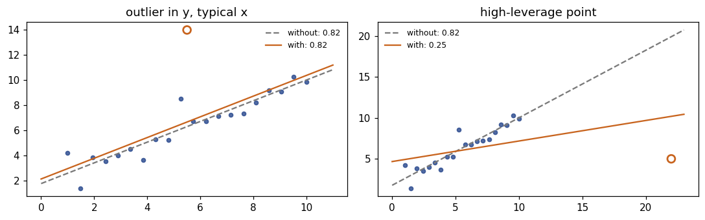
9. The linear algebra you will need¶
\(\hat{\boldsymbol\beta} = (\mathbf{X}^\top\mathbf{X})^{-1}\mathbf{X}^\top\mathbf{y}\) — and why the inverse sometimes does not exist.
Xm = np.array([[1., 1.], [1., 2.], [1., 3.]]) # first column = intercept
y3 = np.array([2., 3., 5.])
print('X.T @ X =\n', Xm.T @ Xm, '\n\nX.T @ y =', Xm.T @ y3)
print('\nbeta_hat =', np.linalg.solve(Xm.T @ Xm, Xm.T @ y3).round(4)) # (1/3, 3/2)
print('same via lstsq:', np.linalg.lstsq(Xm, y3, rcond=None)[0].round(4))
X.T @ X =
[[ 3. 6.]
[ 6. 14.]]
X.T @ y = [10. 23.]
beta_hat = [0.3333 1.5 ]
same via lstsq: [0.3333 1.5 ]
# Perfect collinearity: add a column that is twice another one.
Xbad = np.column_stack([Xm, 2*Xm[:, 1]])
print('det(X.T X) =', round(float(np.linalg.det(Xbad.T @ Xbad)), 12))
try:
np.linalg.inv(Xbad.T @ Xbad)
except np.linalg.LinAlgError as e:
print('inversion failed:', e)
print('\nridge fixes it by inverting (X.T X + lambda I):')
print(np.linalg.inv(Xbad.T @ Xbad + 0.1*np.eye(3)).round(3))
det(X.T X) = 0.0
inversion failed: Singular matrix
ridge fixes it by inverting (X.T X + lambda I):
[[ 1.879 -0.161 -0.322]
[-0.161 8.017 -3.967]
[-0.322 -3.967 2.066]]
# Norms, distances and eigenvectors -- the ideas behind Ch 6 and Ch 12.
beta = np.array([3., -4., 0.5])
print(f'L2 norm {np.linalg.norm(beta, 2):.3f} (ridge penalises this, squared)')
print(f'L1 norm {np.linalg.norm(beta, 1):.3f} (lasso penalises this -> exact zeros)')
C = np.cov(Boston[['rm', 'lstat', 'medv']].to_numpy().T)
vals, vecs = np.linalg.eigh(C)
print('\neigenvalues of the covariance matrix:', np.round(vals[::-1], 2))
print('share of variance in the first component:', round(vals[::-1][0]/vals.sum(), 3))
L2 norm 5.025 (ridge penalises this, squared)
L1 norm 7.500 (lasso penalises this -> exact zeros)
eigenvalues of the covariance matrix: [119.32 16.51 0.24]
share of variance in the first component: 0.877
10. Calculus and gradient descent¶
Every method in this course minimises a loss: differentiate, set to zero and solve — or walk downhill when no closed form exists.
def loss(b, X=Xm, y=y3): return float(((y - X @ b)**2).sum())
def grad(b, X=Xm, y=y3): return -2 * X.T @ (y - X @ b)
beta_hat = np.linalg.solve(Xm.T @ Xm, Xm.T @ y3)
b = np.zeros(2)
print(f'start: beta = {b}, L = {loss(b):.2f}, gradient = {grad(b)}')
b = b - 0.01*grad(b)
print(f'after one step (alpha=0.01): beta = {b.round(3)}, L = {loss(b):.2f}')
print(f'optimum: beta = {beta_hat.round(3)}, L = {loss(beta_hat):.4f}')
start: beta = [0. 0.], L = 38.00, gradient = [-20. -46.]
after one step (alpha=0.01): beta = [0.2 0.46], L = 17.03
optimum: beta = [0.333 1.5 ], L = 0.1667
def descend(alpha, steps):
b_, path = np.zeros(2), [np.zeros(2)]
for _ in range(steps):
b_ = b_ - alpha*grad(b_); path.append(b_.copy())
return np.array(path)
for alpha in (0.001, 0.01, 0.05, 0.07):
p_ = descend(alpha, 60)
end = loss(p_[-1])
print(f'alpha = {alpha:<6} loss after 60 steps = '
f'{end:12.4f} {"DIVERGED" if end > 38 else ""}')
print('\nthe stability limit is 2 / largest eigenvalue of 2 X.T X =',
round(2/np.linalg.eigvalsh(2*Xm.T @ Xm).max(), 4))
alpha = 0.001 loss after 60 steps = 0.8473
alpha = 0.01 loss after 60 steps = 0.1802
alpha = 0.05 loss after 60 steps = 0.1671
alpha = 0.07 loss after 60 steps = 26350532281728104.0000 DIVERGED
the stability limit is 2 / largest eigenvalue of 2 X.T X = 0.0601
g0, g1 = np.meshgrid(np.linspace(-1.5, 2.5, 200), np.linspace(-.5, 3, 200))
Z = np.array([[loss(np.array([a, b_])) for a in g0[0]] for b_ in g1[:, 0]])
fig, ax = plt.subplots(figsize=(6, 3.6))
ax.contour(g0, g1, Z, levels=np.geomspace(.3, 300, 14), colors=[GREY], linewidths=.6)
p_ = descend(0.01, 60)
ax.plot(p_[:, 0], p_[:, 1], '-o', color=ORANGE, ms=3, lw=1.1)
ax.plot(*beta_hat, '*', color='black', ms=14)
ax.set_xlabel(r'$\beta_0$'); ax.set_ylabel(r'$\beta_1$')
ax.set_title('Gradient descent on the least-squares loss')
plt.tight_layout(); plt.show()
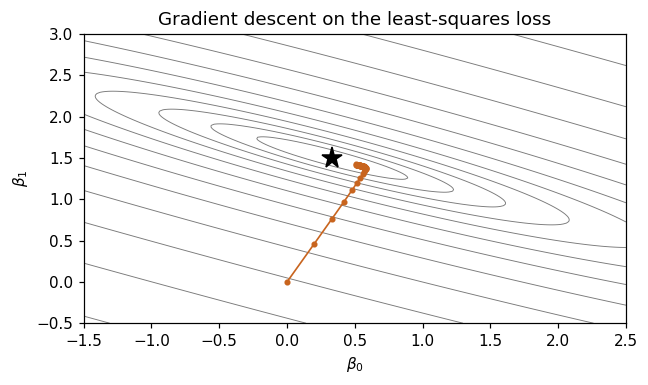
Lecture exercises — worked Python solutions¶
The Chapter 0 deck has two [Python]-tagged exercises. Both are solved here in full; the expected values from the slide solutions appear as trailing comments so you can check every step.
Exercise 0.7 — Interrogating a regression table [Python]¶
A colleague regresses monthly ice-cream sales (€000s) on average temperature (°C) and reports coef 0.9000, std err 0.1500, t 6.00, [0.595, 1.205], R² 0.51, n = 36.
# Exercise 0.7 -- worked solution ---------------------------------------------
coef, se_coef, n_obs = 0.9, 0.15, 36
# (2) verify the t-value and the interval
t_reported = coef / se_coef
print(f'(2) t = coef/se = {t_reported:.2f}') # 6.00
rule_of_thumb = (coef - 1.96*se_coef, coef + 1.96*se_coef)
exact = stats.t.interval(0.95, n_obs - 2, loc=coef, scale=se_coef)
print(f' +-1.96 SE : [{rule_of_thumb[0]:.3f}, {rule_of_thumb[1]:.3f}]')
print(f' exact t : [{exact[0]:.3f}, {exact[1]:.3f}] <- matches the printout')
print(f' t quantile at df={n_obs-2}: {stats.t.ppf(.975, n_obs-2):.3f} (vs 1.96)')
# (1),(3),(4): interpretation -- a 1 degree warmer MONTH is associated with
# EUR 900 more sales; the intercept is sales at 0 C, an extrapolation unless
# the city really gets that cold; R^2 = 0.51 means 49% of the variation is
# still unexplained -- and says nothing about causation.
print(f'\n(4) unexplained share of variation: {1 - 0.51:.0%}')
(2) t = coef/se = 6.00
+-1.96 SE : [0.606, 1.194]
exact t : [0.595, 1.205] <- matches the printout
t quantile at df=34: 2.032 (vs 1.96)
(4) unexplained share of variation: 49%
(5) The causal wording fails twice: the data are observational (month, tourism, holidays and marketing all move with temperature — a confounder), and the coefficient is per 1 °C of monthly average, not per warm afternoon. Defensible version: “months that are 1 °C warmer sell about €900 more, on average.”
Exercise 0.9 — Reading Python output [Python]¶
The exercise quotes df.shape, df["wage"].describe() and df["age"].corr(df["wage"]) for the Wage data. Here everything is recomputed from the real data.
# Exercise 0.9 -- worked solution ---------------------------------------------
d = Wage['wage'].describe()
print('(1) n =', Wage.shape[0], ' p =', Wage.shape[1]) # 3000, 11
iqr_w = d['75%'] - d['25%']
fence = d['75%'] + 1.5*iqr_w
print(f'(2) IQR = {iqr_w:.2f}, upper fence = {fence:.2f} '
f'-> a wage of 220 is {"flagged" if 220 > fence else "not flagged"}')
print(f' but {(Wage["wage"] > fence).sum()} of {len(Wage)} wages are beyond it '
f'({(Wage["wage"] > fence).mean():.1%}) -- flagged means "look", not "delete"')
print(f'(3) mean {d["mean"]:.2f} > median {d["50%"]:.2f} -> right-skewed; '
f'report the median and IQR too')
print(f'(4) r(age, wage) = {Wage["age"].corr(Wage["wage"]):.4f} -- weak LINEAR association only')
print(f'(5) SE of the mean wage = {d["std"]/np.sqrt(d["count"]):.3f}')
(1) n = 3000 p = 11
(2) IQR = 43.30, upper fence = 193.63 -> a wage of 220 is flagged
but 109 of 3000 wages are beyond it (3.6%) -- flagged means "look", not "delete"
(3) mean 111.70 > median 104.92 -> right-skewed; report the median and IQR too
(4) r(age, wage) = 0.1956 -- weak LINEAR association only
(5) SE of the mean wage = 0.762
# (4) continued: r is small because the relationship is CURVED, not because
# age is unimportant. Binned means show the shape that Chapter 7 will model.
bins = pd.cut(Wage['age'], bins=np.arange(15, 85, 5))
profile = Wage.groupby(bins, observed=True)['wage'].mean()
fig, ax = plt.subplots(figsize=(6.5, 3))
ax.scatter(Wage['age'], Wage['wage'], s=6, color=GREY, alpha=.25)
ax.plot([iv.mid for iv in profile.index], profile.values, '-o', color=ORANGE, lw=2)
ax.set_xlabel('age'); ax.set_ylabel('wage')
ax.set_title('Wage rises, then flattens and falls — a correlation cannot see this')
plt.tight_layout(); plt.show()
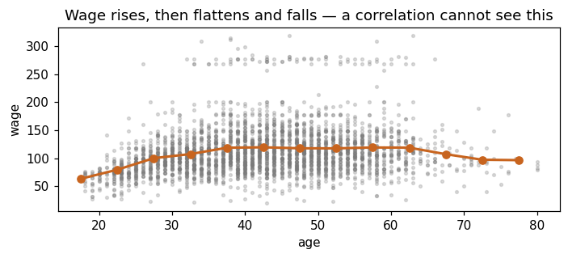
Checking the hand-computed exercises¶
The [Math] exercises of the deck are quick to verify numerically — a good habit for your own problem sets.
# Exercise 0.2 -- service times
svc = np.array([3, 5, 6, 6, 8, 9, 21])
print(f'0.2 mean {svc.mean():.4f} median {np.median(svc)} '
f's2 {svc.var(ddof=1):.3f} s {svc.std(ddof=1):.3f}')
print(f' after fixing the typo 21 -> 12: mean '
f'{np.array([3,5,6,6,8,9,12]).mean():.3f}, median {np.median([3,5,6,6,8,9,12])}')
# Exercise 0.3 -- five stores
xs5 = np.array([1, 2, 3, 4, 5]); ys5 = np.array([2, 4, 5, 4, 10])
Sxx5 = ((xs5-3)**2).sum(); Syy5 = ((ys5-5)**2).sum(); Sxy5 = ((xs5-3)*(ys5-5)).sum()
print(f'0.3 Sxx {Sxx5} Syy {Syy5} Sxy {Sxy5} '
f'r {Sxy5/np.sqrt(Sxx5*Syy5):.4f} b1 {Sxy5/Sxx5:.2f}')
# Exercise 0.4 -- the fraud filter
pf, pl = .95*.005, .02*.995
print(f'0.4 P(flag) {pf+pl:.5f} P(fraud | flag) {pf/(pf+pl):.4f}')
# Extended Exercise 0.1 -- basket values
se_b = 12/np.sqrt(64); t_b = (48.5-45)/se_b
print(f'E0.1 SE {se_b} t {t_b:.2f} p {2*stats.t.sf(t_b, 63):.4f} '
f'n for half-width 1.0: {np.ceil((1.96*12)**2):.0f}')
0.2 mean 8.2857 median 6.0 s2 35.238 s 5.936
after fixing the typo 21 -> 12: mean 7.000, median 6.0
0.3 Sxx 10 Syy 36 Sxy 16 r 0.8433 b1 1.60
0.4 P(flag) 0.02465 P(fraud | flag) 0.1927
E0.1 SE 1.5 t 2.33 p 0.0228 n for half-width 1.0: 554
Exercises¶
Work these before Lecture 1. They use only what is above.
Describe a variable. Pick
Boston['medv']. Report mean, median, SD, IQR, and the number of points flagged by the \(1.5\times\)IQR rule. Is the mean or the median the better summary here, and why? Plot a histogram and a boxplot side by side.Correlation, carefully. Compute the correlation matrix of
Boston[['rm','lstat','medv']]. Which pair is strongest? Plot that pair — is a straight line a fair description? Now compute the correlation after squaringlstatand comment.Base rates. A screening test has sensitivity 99% and specificity 99%. Plot \(P(\text{ill}\mid+)\) against a prevalence running from 0.01% to 5%. At what prevalence does a positive test finally mean “more likely ill than not”?
Standard errors. Draw 1000 samples of size 25 from
Wage['wage']and one of size 400. Compare the SD of the sample means with \(\sigma/\sqrt n\) in both cases.A test and an interval. Test whether the mean
wageof workers with a college degree or more differs from that of the rest. Report the difference, its 95% CI, and the \(p\)-value — and say which of the three you would put in a slide first.Regression. Fit
sales ~ radioonAdvertising. Interpret the slope with units, give its CI, and plot residuals against fitted values. Compare \(R^2\) with theTVmodel above.Leverage. Take the
TVmodel, append one artificial observation atTV = 900, sales = 5, and refit. How much does the slope move? Explain in one sentence.Gradient descent. Standardise
TVbefore fittingsales ~ TVby gradient descent. Does the largest usable learning rate change? Why?
Where to go next¶
Slides:
Chapters/chapter_00/chapter_00.pdf— every topic above, with worked solutions to all ten short and four extended exercises.Next lab:
chapter_01_lab.ipynb— the course proper begins: what statistical learning is, and the three motivating data sets.